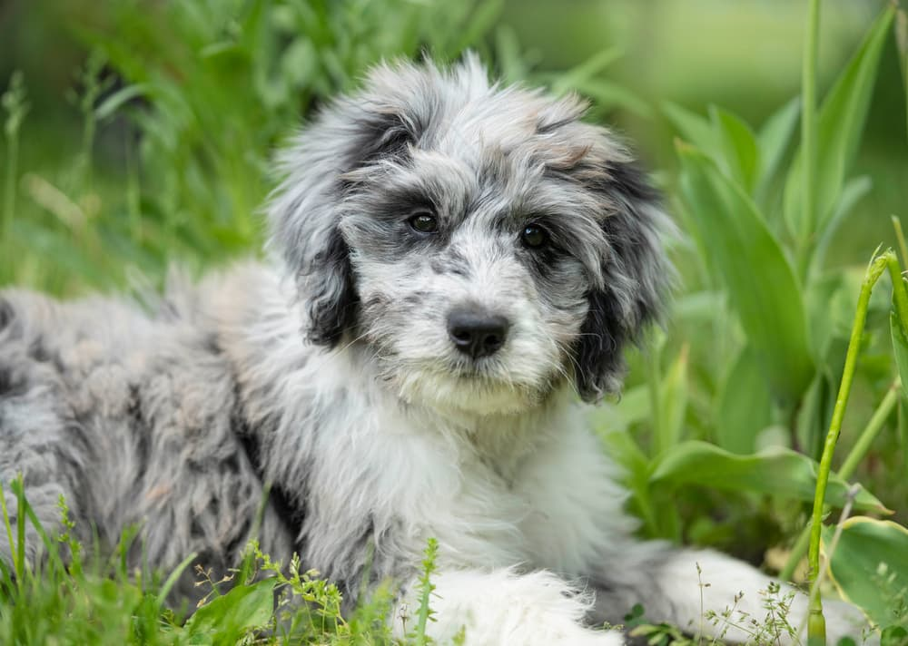

AussieDoodle
Adoption Center
Adopting an AussieDoodle from our AuD family is an extraordinary opportunity to welcome a charming and intelligent
companion into your life.
Each AussieDoodle in our family possesses a unique personality and boundless curiosity, making them
wonderful additions to any loving home.
Adoption Fees: 350$
Vaccination Fees Vary 100-150$

|
Maple | 2 years | Female | Playful and affectionate. Maple loves to cuddle and receive belly rubs. She's a social butterfly and thrives in environments with lots of people and other dogs. She's energetic and loves to play fetch and go on long walks. |

|
Fido | 5 Years | Male | Loyal and intelligent. Fido is a gentle giant and often takes on a protective role. He's highly trainable and loves to please his owners. He's a bit of a homebody and enjoys lounging around the house, but he also enjoys going on hikes and exploring new places. |  | Geese | 1 Year | Female | Spunky and mischievous. Geese is a little ball of energy and loves to get into trouble. She's always getting into mischief, whether it's stealing socks or digging up the backyard. She's highly curious and loves to explore and investigate new sights and smells. |

|
Camelot | 10 weeks | Female | Calm and gentle. Camelot is a laid-back and easy-going Aussiedoodle. He's a bit of a therapy dog and loves to comfort those around him. He's not too high-strung and enjoys relaxing at home, but he also loves going on quiet walks and enjoying the great outdoors. |